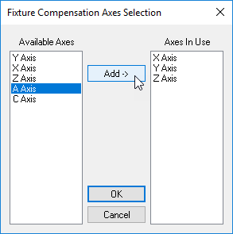

Simulation»Controller (CERUN & GENER only)

Enables the display of the Virtual Machine Controller window if hidden or minimized. Hides the Controller window if already active. This window can also be toggled from the View toolbar by selecting the button shown circled in the toolbar above. Select the button a second time to either hide the Controller window or to restore a Controller window that has been minimized.
The Controller window has tabs arrayed along the top to support the following functions, each of which are described in the sections that immediately follow:
Viewing and jogging model axes
Viewing and setting fixture compensation
Viewing and setting length and diameter compensation
Reviewing the simulation
Simulation»Controller: Axes
{kind=link}
The Axes tab provides interactive motion control over the axes of the model when processing is in a paused state. The sliders move each axis through its available range of travel. Linear axes positions are listed in the units selected in the Unit drop-down list. For rotary axes with unlimited travel, sliders move the axis through ±405º of travel (a full revolution plus 45º in each direction). Axes can be moved to any position (within travel or otherwise) by entering a value in the input-field next to the slider. When the Tools»Toolbar “Use tooltips on VM Controller” checkbox is selected, resting the mouse pointer over an axis name, slider bar or input-field, will pop-up a tool-tip dialog showing the minimum, maximum and current axis position.
If axes names are truncated, the View»Increase X Margin (Ctrl Right) and Decrease X Margin (Ctrl Left) menu functions can be used to adjust the amount of space reserved for axes names. Some models have their axes controls grouped under multiple tabs. These can be selected using the mouse, or via the View»Previous Axes Page (Ctrl Page-Up) and Next Axes Page (Ctrl Page-Down) menu functions.
The model developer may have grouped the axes of the model into multiple tabs in the Axes window. The developer may have also hidden some axes and axes tabs. The right-mouse Show Hidden Axes and Show Hidden Tabs menu selections can be used in the Axes window to show hidden axes and axes tabs (this function is not available with a Dedicated model). The View menu also has various selections and associated shortcut keys that control the layout of axes in the Axes window.
You can toggle the between machine linear axes and LCS (local coordinate system) linear positions using the Simulation»Show»Workpiece Coords (Ctrl W) menu function. When workpiece coordinates are enabled, the linear axes are labeled as “Xw”, “Yw” and “Zw” axes in both the Axes tab and in the HUD.

The axes can be interactively moved to a model defined reference position (e.g., tool change or home position), by first selecting the reference by name in the Ref drop-down selection field and then pressing the button to the immediate right of the reference name.
{kind=link}
Select the Reset All Axes button to reset all axes to the last interpolated position (i.e., to the positions they were at before they were interactively changed). Axes are automatically reset whenever processing is continued. Note that it is not possible to interactively set an axis position and continue processing with the axis at that set position.
The spindle state can also be interactively controlled and tested from the Axes tab. First, select the spindle identifier in the Spindles drop-down selection field and then press one of the buttons immediately to the right as follows:
{kind=link}
Toggles on and off the selected spindle. Any objects attached to the spindle will be swept around the spindle axis to create the volume that will then be used for collision detection and material removal. When the spindle is turning, the swept volume is displayed as a solid object. When the spindle is subsequently stopped, the swept volume continues to be shown in a transparent color (representing the fact that the position of the spindle is unknown), with the unswept object shown inside for reference purposes. Computation of swept volume from a 3D shape can be CPU intensive.
{kind=link}

Places the selected spindle in neutral.

Orients the selected spindle to the angle specified in the field immediately to the right of the button. The swept profile is no longer used once a spindle is oriented, since its position is then known.
For known robot kinematics, Shoulder Right-Left, Elbow Down-Up and Wrist Front-Rear buttons retain the tool tip position and tool orientation, but change selected robot joints to test out different possible robot configurations (8 in total) for collision avoidance and reachability purposes. These controls are available for known robots only. Send ICAM’s Support department your robot model in “dmp” format to have it enabled for configuration testing.
Simulation»Controller: Fixture Compensation
{kind=link}
The Fixture Compensation tab provides control of fixture compensation (also known as work piece compensation). It is important to accurately set appropriate fixture compensation amounts if non-zero fixture compensation amounts will be used at the machine.
Fixture compensation offsets are identified by an integer ID number ranging from 1 up to the number of different offsets available on the CNC. For example, on a CNC with G54 through G59 codes defining fixture compensation, ID number 1 would represent G54, ID number 2 would represent G55 and so on, up to ID number 6 for G59. Select the Add button to define the compensation amounts for a particular ID. Fixture compensation is defined by the control emulator or post-processor, not the model. The Add button will not be available if fixture compensation is not defined.
The offset amounts are entered and listed in the units specified in the Unit drop-down list. Double-click on an axis entry to change its value. Use the Tab and Shift Tab keys to quickly move between entries. Press the Set button to set the offset values of the selected ID lines to the current Axes positions (as set via the Axes tab). Press the Zero button to quickly zero the offset values of the selected ID lines. You can completely remove an offset ID by selecting the entire line and pressing the Delete key.
{kind=link}
By default, only the primary linear axes are listed. Select the Advanced button if it is necessary to choose other axes that can be offset using fixture compensation on the CNC. For example, if the CNC has the ability to offset rotary axes, you should select the Advanced button, choose the rotary axis from the list of available axes, then press the center Add button to include that rotary axis in the list of axes that can be compensated. You can later disable compensation for any axis other than a primary linear, by first selecting it in the list of axes in use and then pressing the center Remove button (the center button label dynamically changes between Add and Remove depending on the axis selected).
Base compensation is always available, whether fixture compensation is supported or not. The base compensation amounts are added to the axes position, regardless of the fixture compensation state in effect on the CNC. Base compensation should to be used to handle the case where the machine operator must manually reset the zero point of the machine to match some reference point on the fixture or part. This is common on older controls that do not have fixture compensation abilities.
The currently active fixture compensation ID can be seen in the simulation window heads-up display by activating the “Active Compensations” checkbox in the Simulation»Display dialog (Ctrl Alt D).
Fixture compensation data is automatically saved in the verification setup (.vsw) file when the program is completed. This setup file will be reused on subsequent runs to quickly reestablish the workpiece compensation settings necessary for an accurate simulation.
Simulation»Controller: Tool Compensation
{kind=link}
The Tool Compensation tab provides control of tool length and tool diameter compensation. It is important to accurately set appropriate tool compensation amounts if non-zero compensation amounts will be used at the machine.
Tool length and tool diameter compensation offsets can be associated with the tool ID, or they can be defined as a simple table of offsets. When compensation is defined with respect to the tool, each offset is identified by the combination of its tool number and the offset ID for that specific tool (e.g., tool 12, offset 1). Otherwise, the compensation is defined as a simple offset ID (e.g., offset 12). Select the appropriate Add button to define the length or diameter compensation amounts for a particular offset. Tool length and diameter compensation are defined by the control emulator or post-processor, not the model. If tool length or diameter compensation is not defined in the CE or PP, then the appropriate Add button will not be available.
The offset amounts are entered and listed in the units specified in the Unit drop-down list. Double-click on an axis, diameter or corner radius entry to change its value. Use the Tab and Shift Tab keys to quickly move between entries. Press the Set button to set the offset values of the selected ID lines to the current Axes positions (as set via the Axes tab). Press the Zero button to quickly zero the offset values of the selected ID lines. You can completely remove an offset ID by selecting the entire line and pressing the Delete key.
The Consistency button checks the length compensation settings against the actual tool definitions, highlighting differences and providing the option to automatically correct the settings.
The currently active length and diameter compensation IDs can be seen in the simulation window heads-up display by activating the “Active Compensations” checkbox in the Simulation»Display dialog (Ctrl Alt D).
Tool compensation data is automatically saved in the verification setup (.vsw) file when the program is completed. This setup file will be reused on subsequent runs to quickly reestablish the tool compensation settings necessary for an accurate simulation.
Simulation»Controller: Time Line
{kind=link}
The Time Line tab provides control over the Time Line review and replay function of VM, which can be used to review and replay the simulation at any point.
The time-scale listed horizontally at the top of the window represents the run time of the process. The pale blue vertical bar shows the moment in time that the simulation windows are currently showing. The light gray vertical line marks the end of the simulation. When the simulation is paused, you can use the up and down arrow keys or the mouse wheel to adjust the time-scale to see more or less detail. You can also zoom in to see more detail by holding the shift key down and selecting the range of interest with the left-mouse button. The Simulation»Camera»Fit (Ctrl Space) function will fit the entire process within the Time Line window. Use the left and right arrow keys, Ctrl Home and Ctrl End keys, or the horizontal scroll bar to move the time-scale left and right. The Simulation»Camera»Center (Ctrl Shift Space) function will center the time-scale at the current selected time. Changes to the time-scale can be undone and redone using the Ctrl Z and Ctrl Y keys.
When the simulation is paused, you can click with the left-mouse button anywhere within the Time Line to see, in the simulation windows, the state of the simulation at that moment in time. Hold the left-mouse button down and drag the mouse left and right to replay the simulation forwards and backwards in time. Click with the right-mouse button anywhere within the window to see a pop-up context menu. The “Synchronize” choice will synchronize the selected moment in the Time Line display with the simulation, source and trace windows. Double-clicking in the Time Line display synchronizes at that point. The “Play from here” choice will replay the simulation from the selected point, using the continuous animation control setting.
Tooltip information describes the collision, overtravel, tool, etcetera, event of interest under the cursor. Tooltips identify the start and ending time of the event as well as other pertinent information. For example, Spindle tooltips indicate the spindle speed and direction of rotation.
The right-mouse pop-up context menu “Show” choice can be used to select the type of information to be shown in the Time Line window, in the form of horizontal colored bars:
Channel data: provided channel creation, deletion, activation, deactivation, starvation, synchronization points, idle and wait time.
Collisions: When MRS (material removal simulation) is active, all collisions involving the in-process stock (e.g., tool rapids into stock) are identified by horizontal amber bars at the top edge of the window; the left edge of the amber bar marks the start of the motion where a collision occurs and the corresponding right edge marks the start of the next motion where the in-process stock is again collision free. Probe touch events are indicated by yellow markers. All other non in-process stock related collisions are identified by a red bar; the left edge of the red bar marks the moment in time where a collision occurs and the corresponding right edge marks the point where the simulation is again collision free.
Operation names: A solid horizontal bar indicates a named operation and vertical markers indicate operation boundaries, provided that OPNAME commands are coded.
Coolant events: A solid horizontal bar indicates when any type of coolant is active. Vertical markers indicate a change in coolant state.
Spindle events: A solid horizontal bar indicates when the spindle is rotating. Vertical markers indicate a change in spindle state.
Tool usage: A solid horizontal bar indicates when a tool is loaded. The color of the bar matches the “cut color” of the tool. Vertical markers indicate a tool change.
Head usage: A solid horizontal bar indicates when a head is loaded. Vertical markers indicate a head change.
Axes overtravel: Motion axes overtravel conditions are individually identified by horizontal light purple bars drawn level with the axis on which an overtravel occurs; the left edge of the light purple bar marks the moment in time where an overtravel occurs and the corresponding right edge marks the point where the axis is once again within travel.
Channel extra data: Provide channel data for channel that are created by the user for other purpose such as tool changer mechanism or UHF devices.
The right mouse pop-up context menu “Next/Previous” choice can be used to search forwards and backwards in time to the next collision, probe touch, tool change, head change or overtravel event. The F3 and Shift F3 keys cause the Time Line to advance and synchronize to the next or previous event, or optionally to the end or beginning of the process if there are no other events of the type being searched.
When running GENER, the right-mouse pop-up context menu “Display feed optimization” choice toggles between a normal view as described above and a view showing the results of SmartFEED optimizations as calculated by the post-processor. When in the feed optimization view, the right-mouse pop-up context menu “Show” choice can be used to select the type of information to be shown in the Time Line window, in the form of graphs:
Volume: The volume of material removed.
MRR and Opt MRR: The material removal rate before and after optimization.
Feed and Opt Feed: The tool velocity before and after optimization.
The Simulation»Options dialog Time Line tab provides the following display options: the ability to animate (i.e., smooth) transitions when moving from one moment in time to another; tool path trace coloring options; F3 and Shift F3 search options; a tooltip information enable/disable option; and an optional upper limit on RAM consumed by Time Line (if memory limitations become an issue).
The Time Line window horizontal scroll bar shows a miniature of the entire process, with the portion currently visible in the Time Line view highlighted. We call this the “Time Line Miniature” or TLM for short. The TLM box can be dragged and manipulated in the same way as any horizontal scrollbar thumb control. In addition, holding the SHIFT key before left clicking and then dragging in the TLM (i.e., selecting a region in the horizontal bar) will set the main Time Line view to the selected time range.
The TLM shows key information from the main Time Line whether selected for display or not. This includes object collisions, MRS collisions, over travels and tool changes.
The TLM also features an easy access toolbar at the bottom-left, providing quick access to the following features of the Time Line:
Undo/Redo undo or reapply Time Line zoom and pan changes
Fit to zoom out the Time Line to view the entire process
Find previous/next to search for the next occurrence of the selected search target